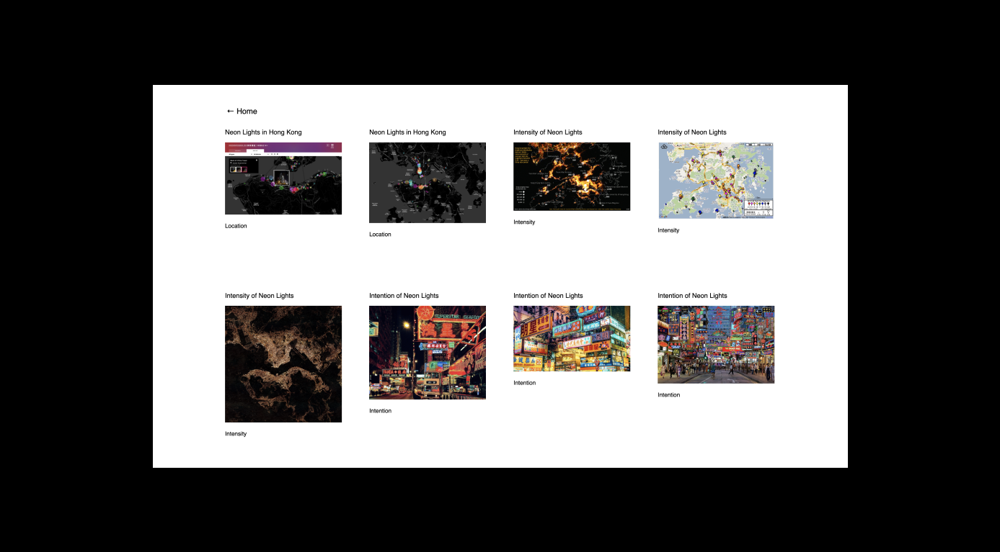

( Web Dev )
Tools: HTML, SCSS, p5.JS
A data visualization of Hong Kong and Amsterdam's usage of light, and how they can be compared and contrasted from a digital distance.
This interactive site and its visuals are dependent on its users' interaction. The left half visualizes Hong Kong’s neonscape, while the right half visualizes Amsterdam’s red light district. Each half has the word ‘light’ at the top in each city’s respective language. When the user drags their mouse over one half, a series of images will be drawn. This series is sourced from an array of images I have selected, each corresponding to a letter in the English word ‘light.’ The correspondence of each image to letter is organized as followed:
- 1. L for location
- 2. I for intensity and intention
- 3. G for the representation and relationship of girls
- 4. H for heat
- 5. T for technology used
In this way, the word ‘Light’ is written through each stroke that the user draws with their mouse. With the images appearing small, the site presents a data visualization of each city’s usage of light, and how they can be compared and contrasted from this distance.
Clicking on the texts ‘Hong Kong’ and ‘Amsterdam’ at the bottom of each half will lead the user to an image directory. These pages display the images in order of their spelling of ‘Light,’ while linking to their respective sources.
